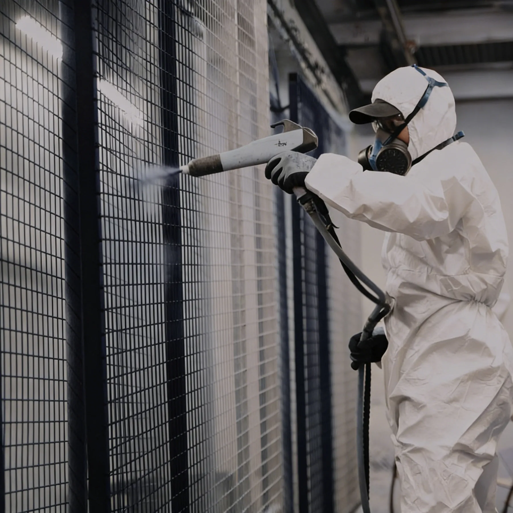

Why “Good Court” Is Harder to Define Than It Looks
Players often describe a court as good or bad within a few minutes, but the underlying reasons can be difficult to see. Recent padel community discussions repeatedly point to turf feel, sand distribution, glare, glass stability, foundation quality and installation as the differences players notice most. A current UK club discussion placed court quality first, specifically mentioning good turf with controlled sand and lighting that does not blind players during overheads.
That feedback is useful because it shows how technical decisions become player experience. It is not a substitute for engineering or standards, so this guide combines community concerns with FIP rules, LTA/SAPCA guidance and commercial project practice.
A 12 mm glass line, galvanized-steel line and 200 W LED line can all look reassuring on a quotation. The court is only as good as the way those components are specified, installed and coordinated with the site.
The 10-Part Commercial Padel Court Quality Checklist
| Area | What “good” looks like | What to verify |
|---|---|---|
| 1. Geometry | Correct court dimensions, clear playing envelope and appropriate clear height | Layout drawings, local rules and FIP playing requirements |
| 2. Foundation | Level, stable, well-drained support compatible with anchoring | Survey, base tolerances, drainage and anchor interface |
| 3. Steel structure | Sections and wall thickness suitable for the system and site | Steel grade, section sizes, fabrication and reinforcement |
| 4. Corrosion protection | Protection matched to indoor, outdoor, humid or coastal exposure | Actual galvanizing / coating process and repair method |
| 5. Glass | Tempered safety glass with controlled processing and installation | Thickness, documentation, edges, holes, fixings and clearances |
| 6. Turf | Padel-specific surface with consistent grip, bounce and infill | Pile, yarn, backing, sand, seams and installation quality |
| 7. Lighting | Uniform visibility with controlled glare | Photometric layout, aiming, output, mounting and electrical scope |
| 8. Drainage | Water leaves the playing system and site without ponding | Base, perimeter drainage, outfalls and roof runoff |
| 9. Site engineering | Court, wind, roof and foundation coordinated for the real location | Design basis, local engineer interface and responsibilities |
| 10. Installation & maintenance | Accurate assembly with inspection and lifecycle plan | Installation method, handover checks, O&M and warranty |
1. Start With the Correct Playing Envelope
FIP rules define the padel playing court at 20 × 10 m. Commercial projects need additional space outside that rectangle for the court structure, foundations, circulation, doors, player access, emergency routes and maintenance. Indoor projects also need sufficient unobstructed height for lobs and overhead play.
A court can contain premium materials and still be poor if columns, roof beams, lights or building services intrude into the player sightline. Review the Padel Court Dimensions & Site Planning Guide before selecting a court model.
2. The Foundation Decides More Than Buyers Expect
One of the strongest themes in manufacturer-comparison discussions is foundation quality. Players may experience a poor base as dead spots, inconsistent bounce, glass movement or drainage problems even when the visible court components look correct.
A good foundation provides stable support, acceptable level tolerances, drainage and a defined anchoring interface. The exact solution can be a project-specific concrete construction or, on suitable sites, an engineered modular foundation system. Neither should be selected without understanding soil, existing slab, water movement, loads and local requirements.
Use the Concrete vs Modular Padel Foundation Guide for the full decision path.
3. Steel Quality Means More Than “Heavy Duty”
Request model-specific steel sections, wall thicknesses and grade rather than relying on visual appearance. Two panoramic courts can look almost identical in photos while using materially different structural quantities and reinforcement strategies.
For SPORTENVO commercial systems, Q235B hot-dip galvanized steel is used in specified configurations. High-wind systems use a different structural specification from a standard court. This distinction matters: an indoor club, a normal outdoor club, a rooftop and a hurricane-exposed coastal site should not be treated as the same engineering problem.
4. Corrosion Protection Must Match the Environment
“Galvanized steel” is not enough information for a commercial buyer. Ask exactly which components are galvanized, whether fabrication occurs before or after treatment where relevant, how powder coating is applied and how damaged coatings should be repaired.
Coastal, island and humid environments need more aggressive inspection and corrosion planning than a dry indoor facility. The best time to define this is before production, not after rust appears.
5. Good Padel Glass Is a System, Not Only a Thickness
12 mm tempered glass is a common commercial configuration and is used in SPORTENVO panoramic and super panoramic systems. But thickness is only one line in the specification.
Good glass performance also depends on tempering quality, edge processing, hole accuracy, packing, support pads, fixing hardware, installation clearances and the stability of the surrounding structure. A supplier should be able to explain the applicable safety-glass documentation for the supplied system.
Use the detailed Padel Court Glass Guide: 12 mm, EN 12150 & Safety.
6. Turf Is Where Players Feel Quality Fastest
Recent Reddit discussion about turf quality highlights pile height, Dtex and yarn construction, while other player and operator threads focus more on the actual playing result: too much loose sand, poor traction, inconsistent bounce or bad turf installation. These perspectives are compatible—the material matters, but installation and maintenance determine how that material performs.
Commercial padel turf is commonly in the 10–12 mm range. SPORTENVO specified systems commonly use 12 mm turf. Do not use pile height as a stand-alone quality score. Compare yarn construction, Dtex, density, backing, silica-sand requirement, drainage, seams and expected usage.
Read the Padel Court Turf Guide for pile height, Dtex, sand and maintenance.
7. Good Lighting Is About Seeing the Ball, Not Maximizing Lux
Padel is particularly sensitive to glare because players repeatedly look upward for lobs, bandejas and smashes. A lighting scheme can have a high average lux value and still feel poor if one bright source sits directly in the player’s line of sight or if the court has large bright-to-dark transitions.
FIP competition rules require lighting to be evenly distributed and include specific standards for event use. For a commercial club, the practical design still needs to evaluate horizontal and vertical illumination, uniformity, glare, fixture position, building geometry and surrounding spill.
Use the Padel Court Lighting: Lux, LED, Uniformity & Glare guide.
8. Drainage Is Part of Court Quality
Players judge an outdoor court by how quickly it returns to safe play after rain. A court that regularly holds water is not simply experiencing a maintenance inconvenience; the problem may come from the turf, base, perimeter drainage, outfall, ring beam or roof runoff.
The drainage strategy should be coordinated before construction with the foundation and local civil works. A roof reduces direct rain on the surface but creates a new concentrated runoff problem through gutters and downpipes.
See the Padel Court Drainage Guide.
9. Wind and Site Engineering Separate a Product From a Project
A standard product catalogue cannot know the wind exposure, building height, terrain, local code, soil, anchor system or roof loads of a specific project. Good court procurement therefore includes a clear engineering boundary.
Ask what has been structurally verified for the quoted court, what remains project-specific and what information will be issued to the local engineer. Rooftop, coastal and high-wind sites should be treated as project engineering exercises rather than standard-equipment purchases.
For exposed sites, read the High-Wind & Coastal Padel Court Planning Guide.
10. Installation Quality Can Change the Result
Reddit manufacturer-comparison threads repeatedly raise a useful point: two courts with similar published specifications can feel different because of anchoring, foundation quality, glass fitting or turf installation. That is why installation cannot be separated from court quality.
At handover, check structural alignment, fasteners, glass clearances, turf seams, infill, net height, doors, lighting, drainage and documentation. Use the Padel Court Installation Guide for the complete sequence.
What a “Premium” Padel Court Should Not Mean
Premium should not mean decorative extras, exaggerated material claims or the highest number on every datasheet. A commercial court is premium when the project has controlled geometry, stable construction, predictable playability, clean visual execution, documented quality and a clear maintenance path.
| Weak buying shortcut | Better question |
|---|---|
| “It uses 12 mm glass, so it is premium.” | What glass documentation, processing, fixings and installation controls are included? |
| “The steel looks thick.” | What are the exact sections, wall thicknesses, grade and corrosion system? |
| “The LED is 200 W.” | What is the complete photometric and mounting design? |
| “The turf is 12 mm.” | What yarn, density, backing, sand and installation system is supplied? |
| “The supplier says hurricane proof.” | What design basis, structural configuration and site-specific engineering apply? |
| “The court is factory direct.” | Which project responsibilities stay with the buyer? |
How SPORTENVO Defines a Commercial Court Specification
SPORTENVO approaches the court as part of a project system: court structure, tempered glass, mesh, turf, lighting, foundation interface, weather protection, packing, installation guidance and local project coordination need to be defined together.
Typical SPORTENVO reference specifications include 12 mm tempered glass, Q235B galvanized steel and 200 W IP65 LED lighting, but the final system changes by product series and project condition. High-wind FORCE-HX projects, mobile courts, roofed courts and modular-foundation projects should not be reduced to one standard specification sheet.
Compare the full range on SPORTENVO Court Systems.
SPORTENVO Technical Reference Data — 2026
This table is a first-party reference summary compiled from current SPORTENVO product specifications and planning pages. It is not an industry average, a universal court specification or a substitute for project engineering. Use each value only within the product and project context stated below.
| Reference item | Current SPORTENVO reference | Project limitation |
|---|---|---|
| Padel playing area | 20 m × 10 m | Playing area only; total site footprint must also include structure, access, circulation and project interfaces. |
| Panoramic / Super Panoramic glass | 12 mm tempered glass | Final glass documentation, processing, fixings and installation remain system- and project-specific. |
| Commercial steel reference | Q235B galvanized steel in specified configurations | Section sizes, wall thickness and corrosion system vary by court model and site exposure. |
| Commercial lighting reference | 200 W IP65 LED fixtures available in the standard project specification | Fixture quantity, optics, mounting, electrical scope and photometric performance must be confirmed for the venue. |
| Padel turf reference | 12 mm turf used in specified SPORTENVO systems | Pile height alone is not a quality score; yarn, density, backing, sand, seams and maintenance also matter. |
| Anti-Hurricane Padel Court — FORCE-HX Series main structure | 200 × 200 × 6 mm reinforced main structure | Reference configuration only; local wind basis, anchors, foundation and approvals require project-specific engineering. |
| Anti-Hurricane Padel Court — FORCE-HX Series wind reference | 136.8 MPH published reference design target | Not a universal hurricane approval or automatic compliance value for every location. |
| Modular Foundation Base main beam | 100 × 200 × 3.0 mm reference main beam | Final geometry, support reactions, anchors, ground suitability and load path must be reviewed for the actual site. |
| Modular Foundation Base leveling | Up to 180 mm reference adjustment range | Weak ground or larger level differences can still require additional civil or structural work. |
Quote comparison should normalize the complete scope around the same project inputs. A value shown here should not be copied into a purchase specification without checking the linked product page, site conditions and local engineering requirements.
Buyer Checklist Before Approving a Court
- Confirm the court model and intended commercial application.
- Confirm playing dimensions and site clearances.
- Verify indoor clear height or outdoor weather exposure.
- Review foundation, levels, drainage and anchors.
- Record steel grade, sections and wall thicknesses.
- Record the full corrosion-protection system.
- Verify glass thickness, processing, documentation and fixing method.
- Review turf datasheet, sand requirement and installation method.
- Review lighting layout, optics, mounting and electrical boundary.
- Define wind, roof and project-specific engineering responsibility.
- Review export packing and glass protection.
- Define installation supervision, local labor and acceptance checks.
- Review component-level warranty and spare-part process.
- Request relevant completed-project evidence.
- Receive operation and maintenance requirements before handover.
For a supplier-by-supplier comparison, use the SPORTENVO Padel Court RFQ Checklist and Manufacturer Selection Guide.
Community Discussions That Informed This Guide
These Reddit discussions are not technical standards, but they are useful for understanding what players and first-time buyers notice and question in real projects.
- What makes a padel court “good” versus “great”?
- What players value most at padel clubs
- Padel court manufacturer comparison
- What makes padel turf good or bad?
Technical References
- International Padel Federation — 2026 competition and court requirements
- SAPCA Code of Practice for the Construction of Padel Courts
Quality Continues After Installation
A good court should still be good after a year of commercial use. That requires cleaning, turf and sand management, drainage checks, glass inspection, structural and corrosion checks, lighting maintenance and a plan for future component replacement.
Use the Padel Court Maintenance: Schedule, Costs & Replacement Planning guide for the operating phase.
Comparing padel court quotations?
Send the quotations together with the project location, court count and site conditions. Compare the entire system—structure, glass, turf, lighting, foundation, engineering and project scope—before comparing the final price.
Request Project Review →Good Padel Court FAQ
What makes a good padel court?
A good commercial court combines correct geometry, a stable foundation, suitable steel and corrosion protection, safety glass, padel-specific turf, controlled lighting, drainage, site engineering, accurate installation and ongoing maintenance.
Is 12 mm glass good for a padel court?
It is a common commercial configuration, but quality also depends on tempering, edges, holes, fixings, packing and installation.
What turf is best?
There is no universal best turf. Compare the complete padel-specific surface system and choose it for the desired play, usage, environment and maintenance model.
Why does the foundation matter?
It controls level, drainage, anchoring and structural support. A poor base can undermine otherwise good court components.
How should I compare manufacturers?
Normalize the exact technical specification, project scope, evidence, engineering, installation, logistics and warranty rather than comparing headline prices or country of origin.